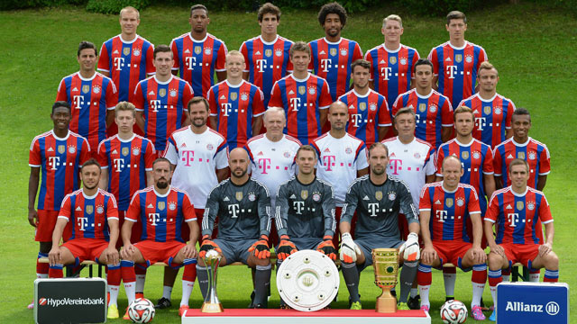

Home
FC Bayern München (în germană Fußball-Club Bayern München, pronunție în germană: /ˈbaɪ.ɐn ˈmʏnçən/), pe scurt Bayern, este un club de fotbal din München, Germania, care evoluează în Bundesliga. Datorită celor 10 trofee europene, dar și celor 51 de trofee naționale câștigate de-a lungul timpului, Bayern reprezintă cel mai important club nemțesc și unul dintre cele mai de succes cluburi de fotbal din lume.

Echipa a fost fondată în 1900 de membri unui club de gimnastică din München. În 1932 a câștigat primul campionat german, învingând Eintracht Frankfurt cu 2-0 în finală. După Al Doilea Război Mondial a promovat în prima divizie (Oberliga Süd). După o retrogradare și o nouă promovare, Bayern München a câștigat Cupa Germaniei, învingând-o cu 1-0 pe Fortuna Düsseldorf. După această victorie, echipa a intrat în perioada de aur, la care au participat Franz Beckenbauer, Gerd Müller și Sepp Maier.
Franz Beckenbauer și-a făcut debutul în Regionalliga Süd și a câștigat primul meci cu FC St. Pauli la 6 iunie 1964. În anul următor, acesta a promovat cu echipa în prima ligă și a câștigat atât Cupa Germaniei, cât și mai multe trofee europene.
Bayern este singura echipa germană de până acum care a câștigat toate trofeele importante (Campionatul Germaniei, Cupa Germaniei și Liga Campionilor). Această performanță a fost realizată după un sezon precedent de coșmar pentru bavarezi, pierzând toate cele 3 trofee. Jupp Heynckes și-a luat rămas bun de la Bayern cum nu se poate mai bine pentru el, predând ștafeta lui Josep Guardiola.